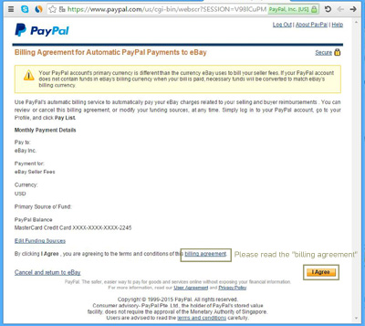

How to install PayPal over ebay

Then click on the left upper corner button 'Sign in'.
Enter your user ID or Email address ( if you don't have any – click here to get one easily )
Don't forget to fill the check box – "Stay signed in".
To proceed, Click on the "Sign in" button.
Click on the right upper button "My eBay", and then click "Summary"
Your eBay summary page will be shown. This is where you can find all actions related to your account.
We advise you to explore this page and fill in the blank values.
Click on the "Account" button.
Under "Account", select from the left menu the "PayPal Account".
Then click on "Change automatic payment method"
In the new window, please make sure you select the "PayPal" option.
After you select this, please click on "Set up Automatic Payments" down below.
Note that the next window will redirect you to PayPal web site in order to make a safe connection between your ebay and PayPal accounts.
This is a very safe connection and you should not be worry about it.
Please proceed the process by clicking the "Continue" button.
In the new window you will have to provide your Email address and password which related to your PayPal account in order to connect with your ebay account.
Note: If you don’t have a PayPal account - Click here to get a new one.
To continue, press in the bottom right corner button "Log In".

This window will show you the summary of the connection process between you ebay and PayPal accounts.
Please make sure that any described detail is eligible.
After verifying, Please view the billing agreement.
To continue, press in the bottom right corner button "I Agree".
This window will show you the summary of the connection process between you ebay and PayPal accounts.
Please make sure that any described detail is eligible.
After verifying, Please view the billing agreement.
To continue, press in the bottom right corner button "I Agree".
Congratulations!
You made this connection and ready to explore this cool site.To continue, press in the bottom right corner button "Return to eBay".
Click on the picture for the next step